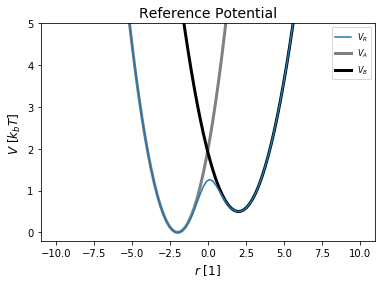

EDS Simulation¶
[3]:
# This Example is building up a simple simulation
import os, sys
my_path = os.getcwd()+"/.."
print(my_path)
sys.path.append(my_path)
# simple Example plot Enveloped Potential with two Harmonic Oscilators
##Imports:
import numpy as np
%matplotlib inline
from matplotlib import pyplot as plt
#import Ensembler
from ensembler.potentials import OneD as pot
##Imports:
import ensembler.visualisation.plotPotentials as exPlot
C:\Users\benja\OneDrive - ETH Zürich\PhD\Code\ensembler_public\examples/..
The Reference Potential¶
interactive example¶
[6]:
from ensembler.visualisation.interactive_plots import interactive_eds
%matplotlib inline
app = interactive_eds()
display(app)
C:\Users\benja\OneDrive - ETH Zürich\PhD\Code\ensembler_public\examples/..\ensembler\visualisation\interactive_plots.py:160: UserWarning: Matplotlib is currently using module://ipykernel.pylab.backend_inline, which is a non-GUI backend, so cannot show the figure.
self.fig.show()
<ensembler.visualisation.interactive_plots.interactive_eds at 0x1bdbb986fc8>

Building an EDS Potential¶
[3]:
test_timing_with_points=100
positions = np.linspace(-4, 4, test_timing_with_points)
w1 = pot.harmonicOscillatorPotential(x_shift=-2)
w2 = pot.harmonicOscillatorPotential(x_shift=2)
print(w1, w2)
V = pot.envelopedPotential(V_is=[w1,w2], eoff=[0,0])
print(V)
print("calculate "+str(len(positions))+" positions: ")
%time V.ene(positions)
print("\nVisualization")
#Plotting
plt.plot(positions, V.ene(positions))
plt.plot(positions, w1.ene(positions))
plt.plot(positions, w2.ene(positions))
plt.ylim([0,2])
harmonicOscillatorPotential
States: 1
Dimensions: 1
Functional:
V: Voffset + 0.5*k*(r - r_0)**2
dVdpos: 0.5*k*(2*r - 2*r_0)
Simplified Function
V: 0.5*r**2 + 2.0*r + 2.0
dVdpos: 1.0*r + 2.0
Constants:
k: 1.0
r_0: -2
Voffset: 0.0
nDimensionss: 1
nStates: 1
harmonicOscillatorPotential
States: 1
Dimensions: 1
Functional:
V: Voffset + 0.5*k*(r - r_0)**2
dVdpos: 0.5*k*(2*r - 2*r_0)
Simplified Function
V: 0.5*r**2 - 2.0*r + 2.0
dVdpos: 1.0*r - 2.0
Constants:
k: 1.0
r_0: 2
Voffset: 0.0
nDimensionss: 1
nStates: 1
envelopedPotential
States: 2
Dimensions: 1
Functional:
V: -T*kb*log(Sum(exp(-Matrix([
[s_0*(-Eoff_0 + state_0)],
[s_1*(-Eoff_1 + state_1)]])[i, 0]/(T*kb)), (i, 0, N - 1)))/s_i
dVdpos: 0
Simplified Function
V: -log(Sum(exp(-Matrix([
[0.5*r**2 + 2.0*r + 2.0],
[0.5*r**2 - 2.0*r + 2.0]])[i, 0]), (i, 0, 1)))/s_i
dVdpos: -Sum(-exp(-Matrix([
[0.5*r**2 + 2.0*r + 2.0],
[0.5*r**2 - 2.0*r + 2.0]])[i, 0])*Matrix([
[1.0*r + 2.0],
[1.0*r - 2.0]])[i, 0], (i, 0, 1))/(s_i*Sum(exp(-Matrix([
[0.5*r**2 + 2.0*r + 2.0],
[0.5*r**2 - 2.0*r + 2.0]])[i, 0]), (i, 0, 1)))
Constants:
amp_0: 1
amp_1: 1
mult_0: 3
mult_1: 3
yOff_0: 0
yOff_1: 0
phase_0: 0
phase_1: 0
nDimensions: 2
nStates: 1
k_0: 1.0
k_1: 1.0
r_shift0: 0.0
r_shift1: 0.0
V_off_0: 0.0
V_off_1: 0.0
A_gauss: 1.0
mu_0: 0.0
mu_1: 0.0
sigma_0: 1.0
sigma_1: 1.0
T: 1
kb: 1
N: 2
s_0: 1.0
s_1: 1.0
Eoff_0: 0
Eoff_1: 0
nDimensionss: 1
state_0: 0.5*r**2 + 2.0*r + 2.0
state_1: 0.5*r**2 - 2.0*r + 2.0
calculate 100 positions:
Wall time: 0 ns
Visualization
[3]:
(0, 2)

What can the parameters for EDS DO?¶
Energy Offsets¶
[ ]:
Smoothing Parameter¶
[4]:
##Construct potential
s=1
Eoffs=(0, 0)
V_is=[pot.harmonicOscillatorPotential(x_shift=10, k=5), pot.harmonicOscillatorPotential(x_shift=-10, k=5)]
eds_pot = pot.envelopedPotential(V_is=V_is, s=s, eoff=Eoffs)
##Parameters
svals= np.logspace(0, -3,num=50)
less_svals= np.logspace(0, -3,num=15)
positions = np.linspace(-25,25, 500)
##Plot
exPlot.envPot_differentS_overlay_plot(eds_potential=eds_pot, s_values=less_svals, positions=positions)
exPlot.envPot_differentS_overlay_plot(eds_potential=eds_pot, s_values=svals, positions=positions,
hide_legend=True, y_range=(-500, 500))
---------------------------------------------------------------------------
ValueError Traceback (most recent call last)
<ipython-input-4-bc3a66ceb55c> in <module>
12
13 ##Plot
---> 14 exPlot.envPot_differentS_overlay_plot(eds_potential=eds_pot, s_values=less_svals, positions=positions)
15 exPlot.envPot_differentS_overlay_plot(eds_potential=eds_pot, s_values=svals, positions=positions,
16 hide_legend=True, y_range=(-500, 500))
~\OneDrive - ETH Zürich\PhD\Code\ensembler_public\examples/..\ensembler\visualisation\plotPotentials.py in envPot_differentS_overlay_plot(eds_potential, s_values, positions, y_range, hide_legend, title, out_path, axes)
381 fig = None
382
--> 383 for i, s, y in enumerate(reversed(list(zip(s_values, ys)))):
384 color = style.potential_color(i % len(style.potential_color))
385 axes.plot(positions, y, label="s_" + str(significant_decimals(s)), color=color)
ValueError: not enough values to unpack (expected 3, got 2)

Many States¶
[ ]:
### SuperMore complex example - 3 states harmonicPot -
# simple Example plot Enveloped Potential with two Harmonic Oscilators
##Construct potential
s1=1.0
s2=0.001
Eoffs=(0, 50, -50, 100, -100)
#V_is=[pot.harmonicOsc1D(x_shift=-10, fc=5), pot.harmonicOsc1D(x_shift=10, fc=5)]
k=20
V_is=[pot.harmonicOscillatorPotential(x_shift=-20, k=k), pot.harmonicOscillatorPotential(x_shift=20, k=k),
pot.harmonicOscillatorPotential(x_shift=10, k=k), pot.harmonicOscillatorPotential(x_shift=-10, k=k), pot.harmonicOscillatorPotential(x_shift=0, k=k)]
eds_pot = pot.envelopedPotential(V_is=V_is, s=s1, eoff=Eoffs)
##Parameters
positions = np.linspace(-30,30,100)
svals=np.logspace(0, -3, 40)
exPlot.envPot_differentS_overlay_plot(eds_potential=eds_pot, s_values=svals, positions=positions,
y_range=(-600,400), hide_legend=True)
Eoffs=(0, 0, 0, 0, 0)
eds_pot = pot.envelopedPotential(V_is=V_is, s=s1, Eoff_i=Eoffs)
exPlot.envPot_differentS_overlay_plot(eds_potential=eds_pot, s_values=svals, positions=positions,
y_range=(-600,400), hide_legend=True)
[ ]: